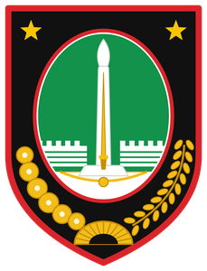

Pusat Bantuan
Kamu tidak harus menghadapinya sendirian. Pilihlah bantuan yang paling nyaman bagimu.
Dalam bahaya atau ingin menyakiti diri sendiri?
Segera hubungi layanan berikut, atau minta orang terdekat menemanimu ke IGD rumah sakit terdekat.
Guru BK sekolahmu
Guru BK adalah tempat terdekat untuk mulai bercerita. Hasil skrining HEALO siswa SMAN 1 dan SMAN 3 Surakarta diterima oleh guru BK di bawah ini.
Anggoro Dyah Wahyu Andiyati, S.Pd.
WhatsApp: +62 856-4078-9003
Psikolog mitra
Tiga psikolog yang menjadi ahli uji (validator) HEALO dan dapat dihubungi untuk konsultasi atau rujukan lanjutan.
Puskesmas mitra
Layanan kesehatan jiwa terdekat yang bekerja sama dengan HEALO, di bawah Dinas Kesehatan Kota Surakarta.
Puskesmas Ngoresan
Jl. Kartika 4 No. 2, RT 03/RW 18, Jebres, Kec. Jebres, Surakarta 57126
Datang ke loket pendaftaran dan sampaikan ingin konsultasi kesehatan jiwa / psikologi.
Puskesmas Sibela
Kelurahan Mojosongo, Kec. Jebres, Surakarta
Datang ke loket pendaftaran dan sampaikan ingin konsultasi kesehatan jiwa / psikologi.
Puskesmas Pucangsawit
Jl. Waringin No. 1, RT 03/RW 13, Pucangsawit, Kec. Jebres, Surakarta 57125
Datang ke loket pendaftaran dan sampaikan ingin konsultasi kesehatan jiwa / psikologi.

Dinas Kesehatan Kota Surakarta
HEALO mendukung program Posyandu Plus 6 SPM Kota Surakarta, termasuk penguatan layanan kesehatan mental di tingkat masyarakat.
Telepon (0271) 644704 · Email dinkes@surakarta.go.id · Instagram @dinkessurakarta
Cara mulai cerita
Kamu tidak perlu menyusun kalimat yang sempurna. Kamu dapat memulai dengan:
"Bu/Pak, saya mau cerita. Akhir-akhir ini saya sering teringat kejadian yang membuat saya takut, dan hal itu mengganggu kegiatan belajar saya."
Jika berkenan, bawalah hasil skrining HEALO sebagai bahan awal pembicaraan.

HEALO bekerja sama dengan
Mendukung program Posyandu Plus 6 SPM Kota Surakarta
Nomor layanan dicek pada November 2026. Pastikan nomor masih aktif sebelum aplikasi dibagikan.